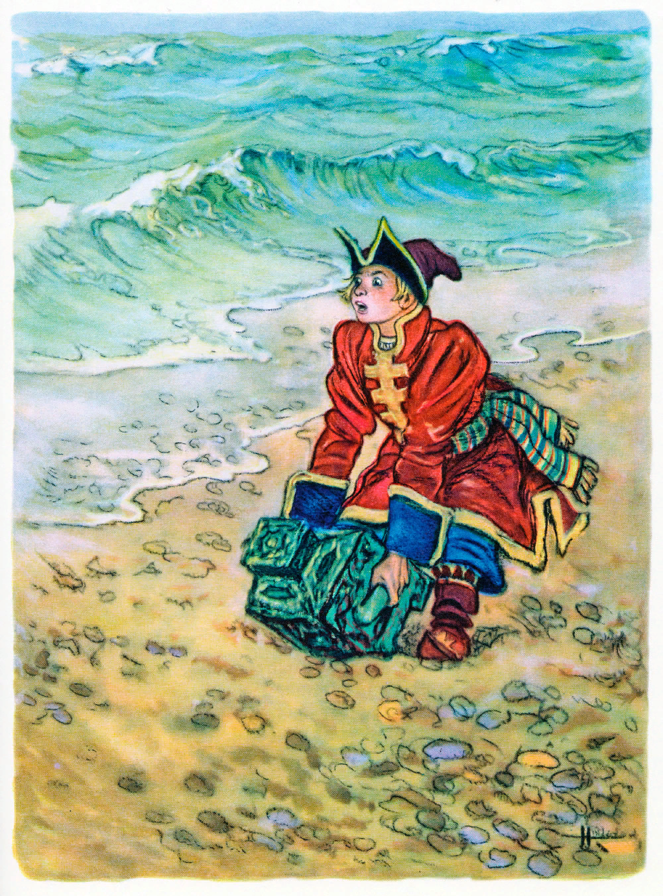
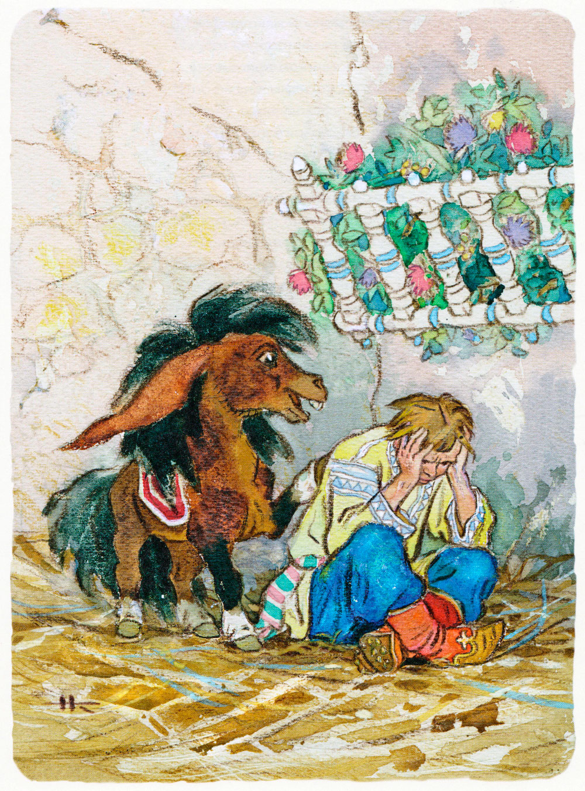
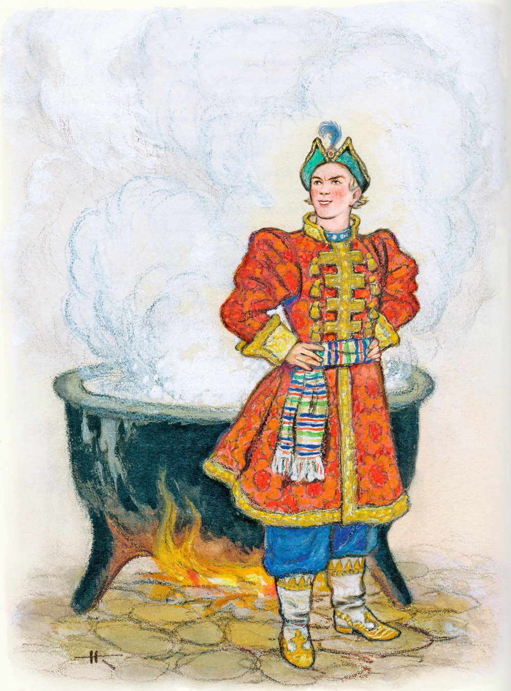
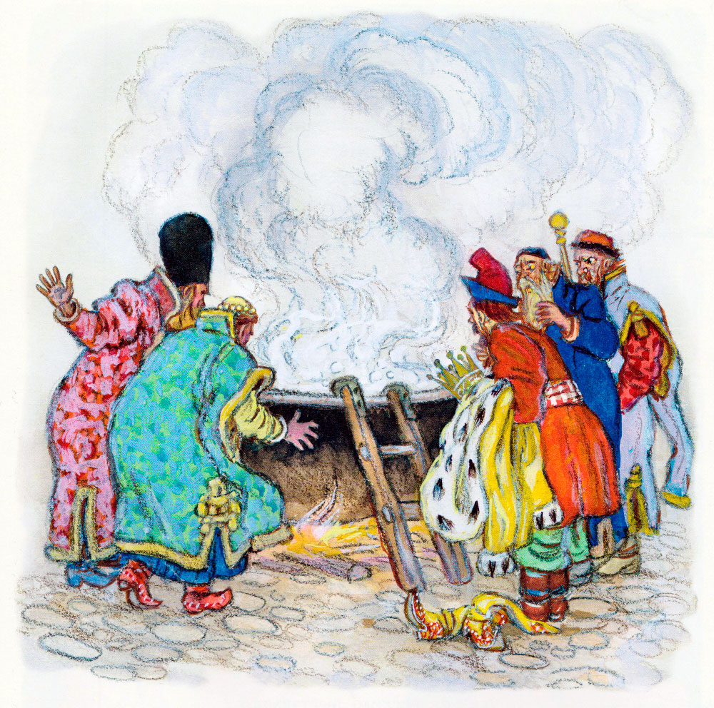
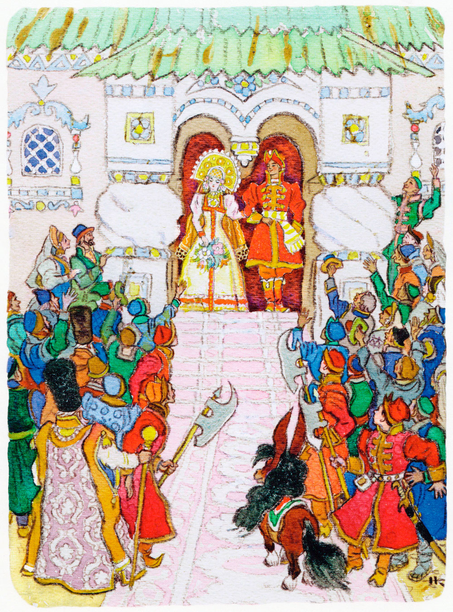

Конёк-горбунок. Часть 3. Продолжение.
Петр Ершов
Горбунок-конек проснулся,
Встал на лапки, отряхнулся,
На Иванушку взглянул
И четырежды прыгнул.
"Ай да Кит Китович! Славно!
Долг свой выплатил исправно!
Ну, спасибо, рыба-кит! -
Горбунок конек кричит. -
Что ж, хозяин, одевайся,
В путь-дорожку отправляйся;
Три денька ведь уж прошло:
Завтра срочное число.
Чай, старик уж умирает".
Тут Ванюша отвечает:
"Рад бы радостью поднять,
Да ведь силы не занять!
Сундучишко больно плотен,
Чай, чертей в него пять сотен
Кит проклятый насажал.
Я уж трижды подымал;
Тяжесть страшная такая!"
Тут конек, не отвечая,
Поднял ящичек ногой,
Будто камушек какой,
И взмахнул к себе на шею.
"Ну, Иван, садись скорее!
Помни, завтра минет срок,
А обратный путь далек".
Стал четвертый день зориться.
Наш Иван уже в столице.
Царь с крыльца к нему бежит.
"Что кольцо мое?" - кричит.
Тут Иван с конька слезает
И преважно отвечает:
"Вот тебе и сундучок!
Да вели-ка скликать полк:
Сундучишко мал хоть на вид,
Да и дьявола задавит".
Царь тотчас стрельцов позвал
И немедля приказал
Сундучок отнесть в светлицу,
Сам пошел по Царь-девицу.
"Перстень твой, душа, найден, -
Сладкогласно молвил он, -
И теперь, примолвить снова,
Нет препятства никакого
Завтра утром, светик мой,
Обвенчаться мне с тобой.
Но не хочешь ли, дружочек,
Свой увидеть перстенечек?
Он в дворце моем лежит".
Царь-девица говорит:
"Знаю, знаю! Но, признаться,
Нам нельзя еще венчаться". -
"Отчего же, светик мой?
Я люблю тебя душой;
Мне, прости ты мою смелость,
Страх жениться захотелось.
Если ж ты... то я умру
Завтра ж с горя поутру.
Сжалься, матушка царица!"
Говорит ему девица:
"Но взгляни-ка, ты ведь сед;
Мне пятнадцать только лет:
Как же можно нам венчаться?
Все цари начнут смеяться,
Дед-то, скажут, внуку взял!"
Царь со гневом закричал:
"Пусть-ка только засмеются -
У меня как раз свернутся:
Все их царства полоню!
Весь их род искореню!"
"Пусть не станут и смеяться,
Все не можно нам венчаться, -
Не растут зимой цветы:
Я красавица, а ты?..
Чем ты можешь похвалиться?" -
Говорит ему девица.
"Я хоть стар, да я удал! -
Царь царице отвечал. -
Как немножко приберуся,
Хоть кому так покажуся
Разудалым молодцом.
Ну, да что нам нужды в том?
Лишь бы только нам жениться".
Говорит ему девица:
"А такая в том нужда,
Что не выйду никогда
За дурного, за седого,
За беззубого такого!"
Царь в затылке почесал
И, нахмуряся, сказал:
"Что ж мне делать-то, царица?
Страх как хочется жениться;
Ты же, ровно на беду:
Не пойду да не пойду!" -
"Не пойду я за седова, -
Царь-девица молвит снова. -
Стань, как прежде, молодец,
Я тотчас же под венец". -
"Вспомни, матушка царица,
Ведь нельзя переродиться;
Чудо бог один творит".
Царь-девица говорит:
"Коль себя не пожалеешь,
Ты опять помолодеешь.
Слушай: завтра на заре
На широком на дворе
Должен челядь ты заставить
Три котла больших поставить
И костры под них сложить.
Первый надобно налить
До краев водой студеной,
А второй - водой вареной,
А последний - молоком,
Вскипятя его ключом.
Вот, коль хочешь ты жениться
И красавцем учиниться, -
Ты без платья, налегке,
Искупайся в молоке;
Тут побудь в воде вареной,
А потом еще в студеной,
И скажу тебе, отец,
Будешь знатный молодец!"
Царь не вымолвил ни слова,
Кликнул тотчас стремяннова.
"Что, опять на окиян? -
Говорит царю Иван. -
Нет уж, дудки, ваша милость!
Уж и то во мне все сбилось.
Не поеду ни за что!" -
"Нет, Иванушка, не то.
Завтра я хочу заставить
На дворе котлы поставить
И костры под них сложить.
Первый думаю налить
До краев водой студеной,
А второй - водой вареной,
А последний - молоком,
Вскипятя его ключом.
Ты же должен постараться
Пробы ради искупаться
В этих трех больших котлах,
В молоке и в двух водах". -
"Вишь, откуда подъезжает! -
Речь Иван тут начинает.
Шпарят только поросят,
Да индюшек, да цыплят;
Я ведь, глянь, не поросенок,
Не индюшка, не цыпленок.
Вот в холодной, так оно
Искупаться бы можно,
А подваривать как станешь,
Так меня и не заманишь.
Полно, царь, хитрить, мудрить
Да Ивана проводить!"
Царь, затрясши бородою:
"Что? рядиться мне с тобою! -
Закричал он. - Но смотри!
Если ты в рассвет зари
Не исполнишь повеленье, -
Я отдам тебя в мученье,
Прикажу тебя пытать,
По кусочкам разрывать.
Вон отсюда, болесть злая!"
Тут Иванушка, рыдая,
Поплелся на сеновал,
Где конек его лежал.

"Что, Иванушка, невесел?
Что головушку повесил? -
Говорит ему конек. -
Чай, наш старый женишок
Снова выкинул затею?"
Пал Иван к коньку на шею,
Обнимал и целовал.
"Ох, беда, конек! - сказал. -
Царь вконец меня сбывает;
Сам подумай, заставляет
Искупаться мне в котлах,
В молоке и в двух водах:
Как в одной воде студеной,
А в другой воде вареной,
Молоко, слышь, кипяток".
Говорит ему конек:
"Вот уж служба так уж служба!
Тут нужна моя вся дружба.
Как же к слову не сказать:
Лучше б нам пера не брать;
От него-то, от злодея,
Столько бед тебе на шею...
Ну, не плачь же, бог с тобой!
Сладим как-нибудь с бедой.
И скорее сам я сгину,
Чем тебя, Иван, покину.
Слушай: завтра на заре,
В те поры, как на дворе
Ты разденешься, как должно,
Ты скажи царю: "Не можно ль,
Ваша милость, приказать
Горбунка ко мне послать,
Чтоб впоследни с ним проститься".
Царь на это согласится.
Вот как я хвостом махну,
В те котлы мордой макну,
На тебя два раза прысну,
Громким посвистом присвистну,
Ты, смотри же, не зевай:
В молоко сперва ныряй,
Тут в котел с водой вареной,
А оттудова в студеной.
А теперича молись
Да спокойно спать ложись".
На другой день, утром рано,
Разбудил конек Ивана:
"Эй, хозяин, полно спать!
Время службу исполнять".
Тут Ванюша почесался,
Потянулся и поднялся,
Помолился на забор
И пошел к царю во двор.
Там котлы уже кипели;
Подле них рядком сидели
Кучера и повара
И служители двора;
Дров усердно прибавляли,
Об Иване толковали
Втихомолку меж собой
И смеялися порой.
Вот и двери растворились;
Царь с царицей появились
И готовились с крыльца
Посмотреть на удальца.
"Ну, Ванюша, раздевайся
И в котлах, брат, покупайся!" -
Царь Ивану закричал.
Тут Иван одежду снял,
Ничего не отвечая.
А царица молодая,
Чтоб не видеть наготу,
Завернулася в фату.
Вот Иван к котлам поднялся,
Глянул в них - и зачесался.
"Что же ты, Ванюша, стал? -
Царь опять ему вскричал. -
Исполняй-ка, брат, что должно!"
Говорит Иван: "Не можно ль,
Ваша милость, приказать
Горбунка ко мне послать.
Я впоследни б с ним простился".
Царь, подумав, согласился
И изволил приказать
Горбунка к нему послать.
Тут слуга конька приводит
И к сторонке сам отходит.
Вот конек хвостом махнул,
В те котлы мордой макнул,
На Ивана дважды прыснул,
Громким посвистом присвистнул.
На конька Иван взглянул
И в котел тотчас нырнул,
Тут в другой, там в третий тоже,
И такой он стал пригожий,
Что ни в сказке не сказать,
Ни пером не написать!
Вот он в платье нарядился,
Царь-девице поклонился,
Осмотрелся, подбодрясь,
С важным видом, будто князь.

"Эко диво! - все кричали. -
Мы и слыхом не слыхали,
Чтобы льзя похорошеть!"
Царь велел себя раздеть,
Два раза перекрестился,
Бух в котел - и там сварился!

Царь-девица тут встает,
Знак к молчанью подает,
Покрывало поднимает
И к прислужникам вещает:
"Царь велел вам долго жить!
Я хочу царицей быть.
Люба ль я вам? Отвечайте!
Если люба, то признайте
Володетелем всего
И супруга моего!"
Тут царица замолчала,
На Ивана показала.
"Люба, люба! - все кричат. -
За тебя хоть в самый ад!
Твоего ради талана
Признаем царя Ивана!"
Царь царицу тут берет,
В церковь божию ведет,
И с невестой молодою
Он обходит вкруг налою.

Пушки с крепости палят;
В трубы кованы трубят;
Все подвалы отворяют,
Бочки с фряжским выставляют,
И, напившися, народ
Что есть мочушки дерет:
"Здравствуй, царь наш со царицей!
С распрекрасной Царь-девицей!"
Во дворце же пир горой:
Вина льются там рекой;
За дубовыми столами
Пьют бояре со князьями.
Сердцу любо! Я там был,
Мед, вино и пиво пил;
По усам хоть и бежало,
В рот ни капли не попало.